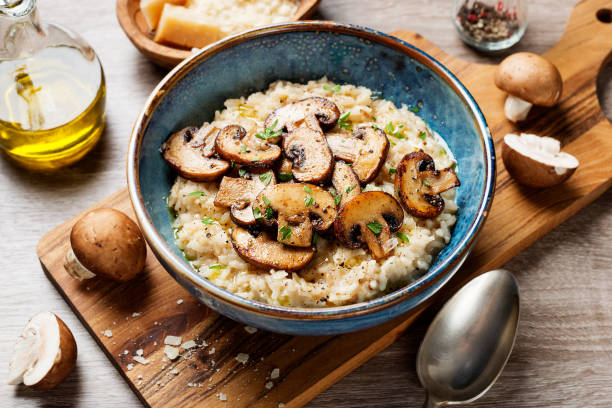

Back to Home
Mushroom Risotto

Ingredients
- 1 cup Arborio rice
- 200g mushrooms (sliced)
- 1 small onion (chopped)
- 2 garlic cloves (minced)
- 3 tbsp olive oil or butter
- 4 cups vegetable or chicken broth (warm)
- 1/2 cup grated parmesan cheese
- 1/4 cup white wine (optional)
- Salt and pepper to taste
- Fresh parsley (for garnish)
Instructions
1. Heat 2 tbsp oil/butter in a pan, sauté onions and garlic until translucent.
2. Add mushrooms and cook until soft. Set aside.
3. In the same pan, add 1 tbsp oil and Arborio rice. Toast for 1-2 mins.
4. Pour in white wine (optional) and stir until absorbed.
5. Gradually add warm broth one ladle at a time, stirring constantly.
6. After 15–20 mins, when rice is cooked al dente, mix in cooked mushrooms.
7. Stir in parmesan cheese, season with salt and pepper.
8. Garnish with parsley and serve hot.